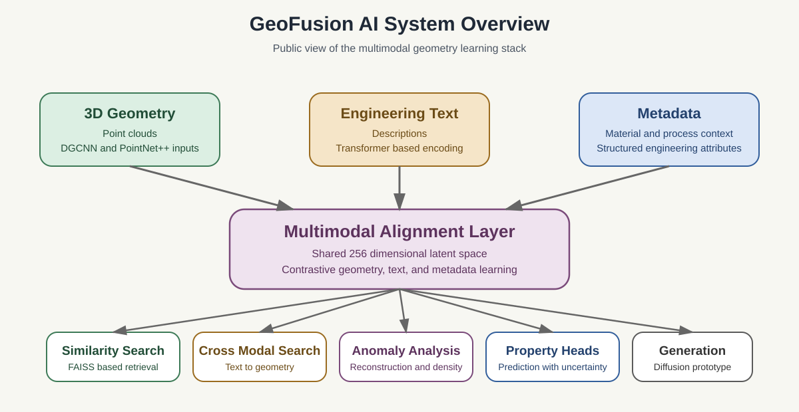
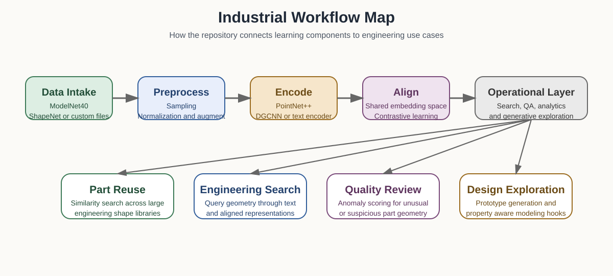
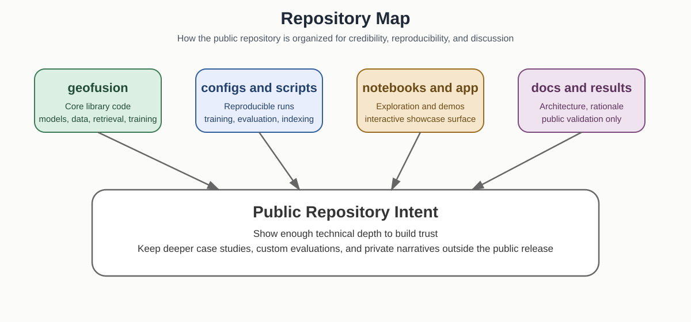

System design
Architecture that keeps depth legible.
GeoFusion AI is organized so that representation learning can evolve without making the downstream experience fragile. The architecture is deliberate: separate the hard modeling work from the workflow layer, then keep the whole system readable enough for serious collaborators to assess quickly.

What the architecture optimizes for
This system is designed to do two things at once: support ambitious multimodal modeling and remain stable enough for retrieval, anomaly analysis, and product-facing workflows. That balance is what makes the repository feel credible instead of experimental in the wrong way.
Logical pipeline
The pipeline moves from ingestion to aligned representation learning, then into retrieval and applied engineering workflows. Each stage has a clear role, which keeps experimentation tractable and downstream interfaces stable.

Pipeline stages
- Data ingestion: public datasets and custom point cloud files enter through dataset adapters.
- Geometric preprocessing: point clouds are sampled, normalized, and augmented for robust learning.
- Representation learning: PointNet++ or DGCNN process geometry, transformers process text, and structured encoders process metadata.
- Shared latent alignment: all modalities are projected into a common 256-dimensional space with contrastive learning.
- Workflow execution: retrieval, anomaly scoring, property prediction, and cross-modal search operate on the shared embedding.
- Product layer: Streamlit apps, notebooks, and scripts expose the system for exploration and validation.
Module interfaces
The codebase is split into modules that reflect real engineering responsibilities rather than convenience-only packaging. That structure makes it easier to swap components, benchmark alternatives, and keep workflows resilient while the representation layer changes.
geofusion.data
Dataset loading, transforms, synthetic metadata generation, and the input conventions that make training reproducible.
geofusion.models
Geometry encoders, text encoders, the multimodal aligner, anomaly models, and the diffusion model.
geofusion.retrieval
FAISS indexing, embedding storage, and bidirectional cross-modal retrieval over aligned vectors.
geofusion.training
Losses, metrics, schedulers, and config-driven training orchestration for stable experimentation.
geofusion.workflows
Applied tasks such as part similarity, anomaly analysis, property prediction, and text search.
Product surface
Streamlit, notebooks, and scripts present the system without collapsing core logic into one-off demos.
Why this structure matters
The real strength of the architecture is not only technical breadth. It is the discipline of making ambitious modeling work inspectable. That is what lets a repository create trust before a meeting ever happens.

Architectural rationale
GeoFusion AI separates representation learning from workflow execution so that encoders can be swapped, training recipes can be compared, and downstream applications can remain stable while the research layer improves. That is a practical engineering choice, not only an academic one.